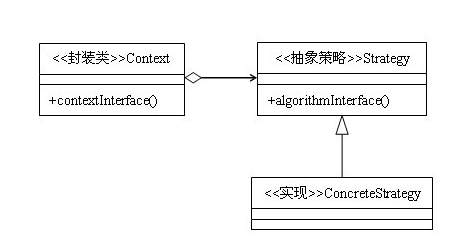
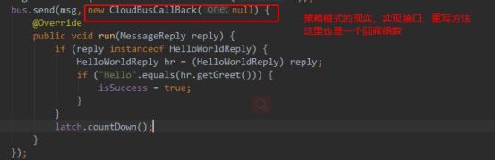
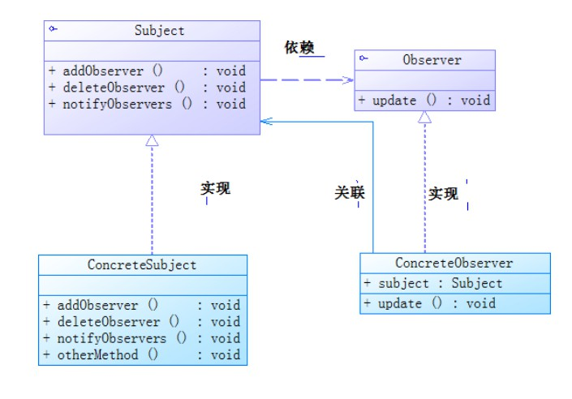
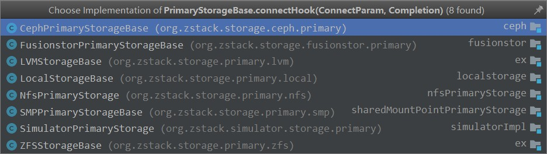

概述
哪里会有人喜欢孤独，不过是不喜欢失望罢了。
在学习Zstack时候看到了系统中多处使用策略模式和观察者模式，学习发现这两种模式在开发中经常用到，故在此记录下来。
策略模式
定义
策略模式(Strategy Pattern)：定义一系列算法，将每一个算法封装起来，并让它们可以相互替换。策略模式让算法独立于使用它的客户而变化，也称为政策模式(Policy)。
策略模式是一种对象行为型模式。
使用场景
- 完成一项任务，往往可以有多种不同的方式，每一种方式称为一个策略，我们可以根据环境或者条件的不同选择不同的策略来完成该项任务。
- 在软件开发中也常常遇到类似的情况，实现某一个功能有多个途径，此时可以使用一种设计模式来使得系统可以灵活地选择解决途径，也能够方便地增加新的解决途径。
- 在软件系统中，有许多算法可以实现某一功能，如查找、排序等，一种常用的方法是硬编码(Hard Coding)在一个类中，如需要提供多种查找算法，可以将这些算法写到一个类中，在该类中提供多个方法，每一个方法对应一个具体的查找算法；当然也可以将这些查找算法封装在一个统一的方法中，通过if…else…等条件判断语句来进行选择。这两种实现方法我们都可以称之为硬编码，如果需要增加一种新的查找算法，需要修改封装算法类的源代码；更换查找算法，也需要修改客户端调用代码。在这个算法类中封装了大量查找算法，该类代码将较复杂，维护较为困难。
类图

对照类图可以看到，策略模式与模版方法模式的区别仅仅是多了一个单独的封装类Context，它与模版方法模式的区别在于：在模版方法模式中，调用算法的主体在抽象的父类中，而在策略模式中，调用算法的主体则是封装到了封装类Context中，抽象策略Strategy一般是一个接口，目的只是为了定义规范，里面一般不包含逻辑。其实，这只是通用实现，而在实际编程中，因为各个具体策略实现类之间难免存在一些相同的逻辑，为了避免重复的代码，我们常常使用抽象类来担任Strategy的角色，在里面封装公共的代码。
代码演示
- 创建一个接口
Strategy.java1
2
3public interface Strategy {
public int doOperation(int num1, int num2);
}
- 创建实现接口的实体类
OperationAdd.java1
2
3
4
5
6public class OperationAdd implements Strategy{
@Override
public int doOperation(int num1, int num2) {
return num1 + num2;
}
}
- 创建 Context 类
Context.java
1 | public class Context { |
从上面代码可以看出：创建Context时，传入不同的Strategy的子类会执行不同的功能方法。使用到java父类的引用指向子类对象。
优缺点和注意事项
优点： 1、算法可以自由切换。 2、避免使用多重条件判断。 3、扩展性良好。
缺点： 1、策略类会增多。 2、所有策略类都需要对外暴露。
Zstack中的体现

Zstack中充斥着大量的回调函数，如上图所示。CloudBusCallBack是一个接口，通过在方法中实现匿名类重写接口中定义的方法，方法中的功能可以根据上层类要实现的功能去灵活的定义。 这种方式就和传入一个子类对象一样，不过这个子类对象没有名字。因为Zstack所有功能的模块都是通过异步通信的，对策略模式了解可以有效的加深对整个Zstack的了解。
观察者模式
定义
意图：定义对象间的一种一对多的依赖关系，当一个对象的状态发生改变时，所有依赖于它的对象都得到通知并被自动更新。
优缺点
优点： 1、观察者和被观察者是抽象耦合的。 2、建立一套触发机制。
缺点： 1、如果一个被观察者对象有很多的直接和间接的观察者的话，将所有的观察者都通知到会花费很多时间。 2、如果在观察者和观察目标之间有循环依赖的话，观察目标会触发它们之间进行循环调用，可能导致系统崩溃。 3、观察者模式没有相应的机制让观察者知道所观察的目标对象是怎么发生变化的，而仅仅只是知道观察目标发生了变化。
使用场景
- 一个抽象模型有两个方面，其中一个方面依赖于另一个方面。将这些方面封装在独立的对象中使它们可以各自独立地改变和复用。
- 一个对象的改变将导致其他一个或多个对象也发生改变，而不知道具体有多少对象将发生改变，可以降低对象之间的耦合度。
- 一个对象必须通知其他对象，而并不知道这些对象是谁。需要在系统中创建一个触发链，A对象的行为将影响B对象，B对象的行为将影响C对象……，可以使用观察者模式创建一种链式触发机制。
注意事项： 1、JAVA 中已经有了对观察者模式的支持类。 2、避免循环引用。 3、如果顺序执行，某一观察者错误会导致系统卡壳，一般采用异步方式。
类图
创建 Subject 类、Observer 抽象类和扩展了抽象类 Observer 的实体类。

代码演示
观察者模式，我理解的就是观察者订阅被观察者的状态，当被观察者状态改变的时候会通知所有订阅的观察者的过程。
- 创建观察者接口
1 | public abstract class Observer { |
- 观察者的实现类
第一个观察者1
2
3
4
5public class F_Observer extends Observer {
public void update(String msg) {
System.out.println(F_Observer.class.getName() + " : " + msg);
}
}
第二个观察者
1 | public class S_Observer extends Observer { |
第三个观察者
1 | public class T_Observer extends Observer { |
- 被观察者
1 | public class Subject { |
- 运行
1 | public class Main { |
总结：从上面的代码中可以看出，当被观察者的行为改变的时候就可以通知观察者，观察者可以依据不同的变现做出不同的反应，我猜想：MQ有一种模式是消息订阅模式，其中必用到观察者模式，不过MQ使用的必然是异步的方式。
Zstack中的体现
观察者模式在Zstack中的体现就要和Zstack的三驾马车（后面会讲到）联系到一起了。三驾马车分别对应着三层：应用层，业务层和领域层。
应用层（可以被调用的API）：就是界面定义的一些功能。
业务层（一个Impl）：一个服务的入口，对功能的分发，不会处理底层很具体功能。
领域层（base）：这层主要是一些行为的逻辑，对某一个功能具体的操作。
我们知道各个层之间是需要通信的，那么层与层之间只能是单向的。上层可以直接使用或操作下层元素，方法是通过调用下层元素的公共接口，保持对下层元素的引用（至少是暂时的），以及采用常规的交互手段。而如果下层元素需要与上层元素通信，则需要采用另一种通信机制——比如回调或者Observers模式（在ZStack中即是ExtensionPoint）。
这里以PrimaryStorageBase为例：在PrimaryStorageBase中，其中handle APIAttachPrimaryStorageToClusterMsg的地方会做事件发送：
1 | extpEmitter.preAttach(self, msg.getClusterUuid()); |
其会发送向：

在抽象等级上，PrimaryStorageBase是比图中的这些Base高的。而这类具象Base可以使Message返回Success或者Fail使高层Base做出不同的决策。这里是通过回调函数的形式来对上层的Base进行通知的。具体对象的Base执行失败或者成功会回调上层的fail或者success，这样上层就知道下面的方法是否执行成功。因为系统中都是通过异步的方式来实现的。